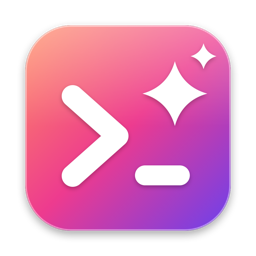

Agentique
Le terminal macOS pensé pour travailler avec des agents IA — entièrement en français.
Organisation
- Des colonnes plutôt que des onglets — une bande qui défile de gauche à droite, chaque colonne empile ses volets. On glisse, on redimensionne, on réorganise sans se perdre.
- Tout au clavier — chaque action est une commande, chaque commande a son raccourci, et une palette de recherche retrouve celles qu'on a oubliées.
- Tout revient au relancement — colonnes, barre latérale et sessions d'agents. Fermé en pleine tâche ? L'agent reprend où il en était.
Agents
- Qui a besoin de toi, d'un coup d'œil — la barre latérale montre si chaque agent travaille, attend ou demande une autorisation, sans changer de volet.
- Sous-agents visibles — un badge indique combien tournent et avec quels modèles.
- Dans la barre de menus — l'état des agents reste visible même quand la fenêtre est cachée, et le Mac ne se met pas en veille pendant qu'un agent travaille.
- Compatible avec Claude Code, Codex, Gemini CLI, Copilot CLI, Cursor, OpenCode, Amp, Mistral Vibe et une dizaine d'autres.
Au quotidien
- Serveurs et pull requests dans la barre latérale — les ports locaux en cours deviennent cliquables, les branches affichent l'état de leur PR.
- Copie propre — copie la sortie d'un agent sans les invites, les cadres ni les paramètres de suivi des liens.
- Glisser un fichier dans une session ssh — il est envoyé sur la machine distante et son chemin collé.
- Thèmes Ghostty avec aperçu en direct, opacité et flou. Rendu GPU natif, sans Electron.
Installation
1. Décompresse le zip, glisse Agentique.app dans Applications.
2. Au premier lancement, macOS affiche « développeur non identifié » — fais
clic droit → Ouvrir, puis confirme. C'est normal, l'app n'est pas distribuée via
l'App Store.
3. Les mises à jour suivantes se font toutes seules, ou depuis
Agentique → Rechercher les mises à jour…